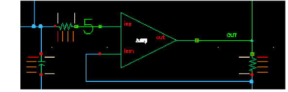

14
Helping Simulations to Converge
This chapter describes how you can help a troublesome simulation to converge. Select topics from the following list to view more information.
- Commands for Forcing Convergence
- Selecting Nodes and Setting their Values
- Loading an Existing Convergence Setup
- Highlighting Set Nodes
- Storing a Solution
- Restoring a Solution for Spectre
Commands for Forcing Convergence
You use the commands in the Simulation – Convergence Aids menu to help the simulator find a solution when it fails to achieve convergence. Once you get the simulation to converge, you can save the DC and Transient solutions. When you resimulate, you can save time by restoring the saved solutions.
There are two commands to help the simulator find a solution:
- Node Set, which provides an initial guess for nodes in any DC analysis or the initial condition calculation for the transient analysis
- Initial Condition, which provides initial conditions for nodes in the transient analysis
Refer to the simulator manual for specific details about the commands that help circuits converge. Not all simulators support these three commands, and simulators implement these methods differently.
Node Set
To set an initial DC voltage on selected nodes, use the Simulation – Convergence Aids – Node Set command.
For Spectre, the node set is used to provide an initial guess for nodes in any DC analysis or the initial condition calculation for the transient analysis. It netlists to
nodesetnode=value
For more information, see the Node Sets (nodeset) section in the Other Simulation Topics chapter of the Spectre Circuit Simulator Reference.
For other simulators, the Node Set command is equivalent to
.NODESET v(node)=value
Initial Conditions
To set an initial transient voltage on selected nodes, use the Simulation – Convergence Aids – Initial Condition command. The Select Initial Condition Set form appears with the schematic design.
For Spectre, initial conditions are used to provide initial conditions for nodes in the transient analysis. Initial conditions are accepted only for inductor currents and node voltages where the nodes have a path of capacitors to ground. This is netlisted to
icnode=value
For more information, see the Initial Conditions (ic) section in the Other Simulation Topics chapter of the Spectre Circuit Simulator Reference.
For other simulators, the Initial Condition command is equivalent to
.ICnode=value
ic node:index_number=value
Force Node
Force Node command sets the voltage on a node and locks it at that voltage during the entire simulation. To set a node to a specific voltage throughout the simulation, use the Simulation – Convergence Aids – Force Node command.
For details on this command, see the reference manual for the simulator that you use.
One way to use this feature is to store the DC solution from a simulation with Force Node active, remove the Force Node setting, restore the DC solution, and run another simulation.
HspiceD Convergence Aids
The Convergence Aids submenu appears and works slightly different.
-
Convergence Aids – Node Set (.NODESET) initializes specified nodal voltages for a DC operating point analysis. The
.NODESETstatement is used to correct convergence problems in a DC analysis. Setting nodes in the circuit to values that are close to the DC operating point solution enhances the convergence of the simulation. The Select Node Set form works in the same way as the Spectre Direct interface. The netlist will contain the.NODESETstatement line. - Convergence Aids – Initial Condition (.IC) or Convergence Aids– Force (.DCVOLT) sets the transient initial conditions. The initialization depends on whether the UIC parameter is included in the .TRAN analysis statement. If the UIC parameter is specified in the .TRAN statement, the HSPICE simulator does not calculate the initial DC operating point. Consequently, the transient analysis is entered directly.
-
Select Initial Condition Set and the Select Force Node Set work in the same way as the Spectre Direct interface. The netlist contains the
.ICand the.DCVOLTstatement line, whichever the case may be.
Selecting Nodes and Setting their Values
Perform the following steps to select a node and set its voltage:
-
Choose Simulation – Convergence Aids and a convergence command (Node Set, Initial Condition, or Force Node).
The schematic opens in a new tab and a form appears to enter the voltage. Each command displays a different form. The Select Node Set form is shown below.
- Type the voltage.
-
Click in the schematic to select the first node.
The node name appears in the form.
In the schematic, the node is highlighted and the voltage appears. For split nets, the system labels only the driving cell.
 - To set other nodes to the same voltage, select them.
- To set other nodes to a different voltage, change the voltage, and select other nodes.
- Click OK or Cancel when you are finished selecting nodes.
myVoltage”) variable expression syntax. The variable, myVoltage, will then appear in the Design Variables section in the Setup assistant of Explorer. To provide a value for the variable, right-click the variable and choose Edit Variable. The Editing Design Variables form appears. Specify the value in the Value column of the Design Variables table. If you provide an expression, the value of the expression is calculated when you create the netlist.You can select nodes at any level of the hierarchy. When you select an interface node at a lower level, the node is highlighted, but the voltage value appears only on the higher-level schematic.
Releasing Voltages
Perform the following steps to release the node set, initial condition, or force node voltage settings:
-
Choose Simulation – Convergence Aids and a convergence command (Node Set, Initial Condition, or Force Node).
The schematic opens in a new tab and a form appears listing all of the nodes that have been set. The Select Node Set form is shown below.
-
Click the net in the schematic to release it, or click the net name in the form and click Delete.
On the form, you can select several nodes to release by holding down the left mouse button and dragging through the list box. - Click OK or Cancel when you are finished releasing nodes.
Changing Voltages
Perform the following steps to change the value of the voltage set on a node:
-
Choose Simulation – Convergence Aids and a convergence command (Node Set, Initial Condition, or Force Node).
The schematic opens in a new tab and a form appears listing all of the nodes that have been set. The Select Node Set form is shown below.
- Click the node name to highlight it.
- Type the new voltage value, and click Apply.
- Click OK or Cancel when you are finished changing voltages.
Loading an Existing Convergence Setup
Perform the following steps to load an existing convergence setup:
-
Choose Session – Load ADE L State.
The Loading State form appears. The form displays the state files in the run directory identified by the Cell and Simulator fields. -
Choose a run directory with the Cell and Simulator fields.
The list box shows the saved states for the cell and simulator combination. - Click a State Name.
- Check that Convergence Setup check box is selected, and click OK.
Highlighting Set Nodes
While the Select commands are active, the system highlights selected nodes and labels them with the voltages you set. After you close the form, the system removes the highlighting and the labels.
Perform the following step to redisplay the highlighting and labels:
- Choose Simulation – Convergence Aids and a convergence command (Node Set, Initial Condition, or Force Node).
Perform the following step to remove the highlighting and labels:
Storing a Solution
To store a solution for the Spectre simulator, use the write and writefinal fields in the State File Parameters section of any Analysis Options form.
This causes the Spectre simulator to write out the initial and final conditions of a transient analysis. By default, the conditions are written to the files spectre.ic and spectre.fc in the netlist directory.
To store the solution of an analysis, use the write and writefinal fields of the DC Options form for the analysis.
Restoring a Solution for Spectre
To restore a saved transient solution, use the readns field in the Convergence Parameters section of the Transient Options form. Use the name of the file that was previously used in the write or writefinal sections of the same form.
To stop using the solution, clear the field.
To restore a saved DC solution, use the readns field in the State-File Parameters section of the DC Options form. Use the name of the file that was previously used in the write or writefinal sections of the same form.
To stop using the solution, clear the field.
Return to top